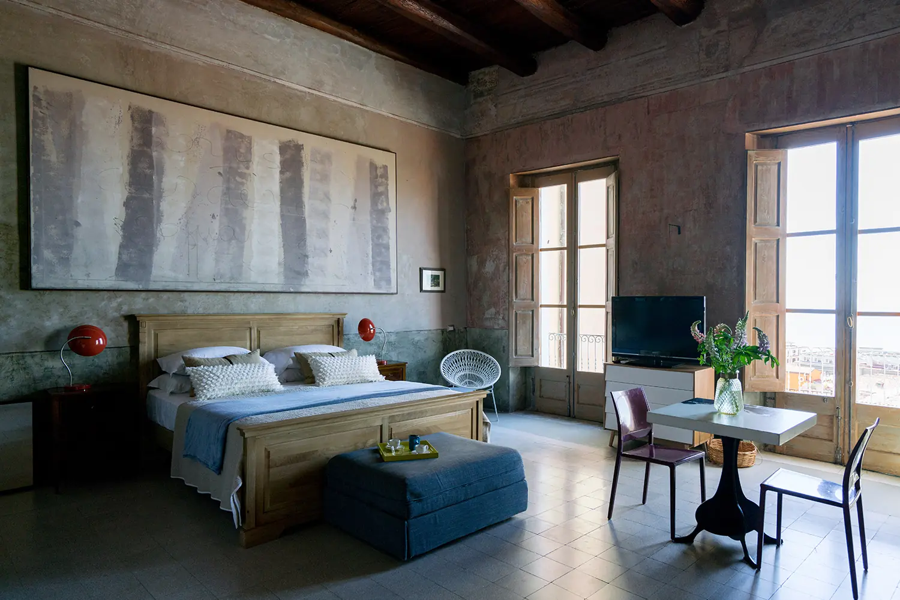
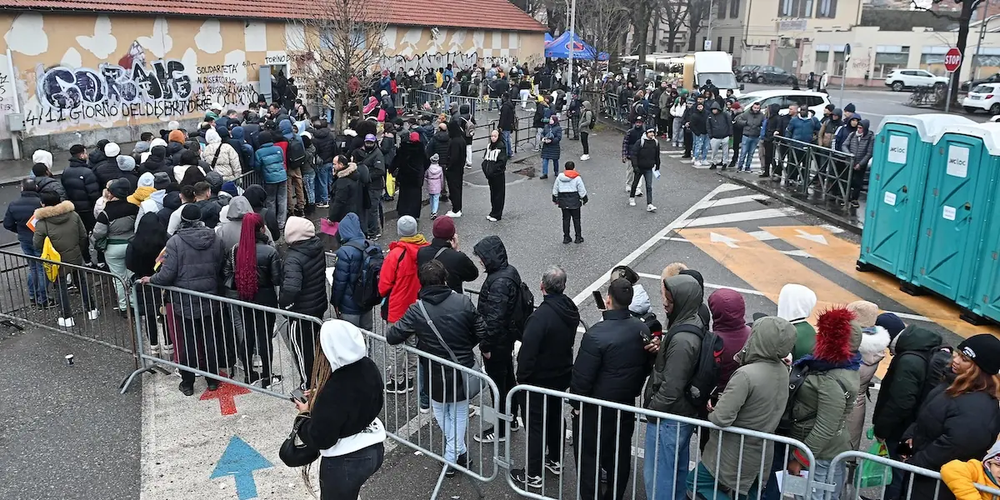

A note from Spencer
This guide is based on my personal experience relocating to Italy and obtaining my Italian passport through Jure Sanguinis. While it offers valuable guidance, it's essential that you conduct your own research for the specific municipality you'll be living in — steps and requirements vary by region, and immigration is a serious matter that demands thorough preparation.

Why apply from Italy?
The consulate route is the most common path for North Americans pursuing Italian citizenship by descent, but it comes with one significant drawback: wait times of 3–5 years are common, and some consulates have backlogs stretching even longer.
Applying directly through a local Italian municipality (comune) can reduce the timeline to 6–12 months — sometimes even faster. The tradeoff is that you must physically relocate to Italy and be present throughout the process. For people who are flexible, planning to move to Italy anyway, or simply can't tolerate the consulate wait, the municipality route is worth serious consideration.
Step 1: Gather your documentation
Before you travel, assemble your complete Jure Sanguinis file. This is not a guide for building that file from scratch — see our documents checklist for that — but you should have the following ready before you arrive:
- Vital records: birth, marriage, and death certificates for yourself and your ancestors
- Naturalization records or official "no record found" statements for your Italian ancestor
- Apostilles on all non-Italian documents
- Certified Italian translations of all non-Italian documents
Arriving in Italy with an incomplete file adds significant time to the process, since obtaining missing records from abroad becomes much harder once you're already there.
Step 2: Get your Italian Codice Fiscale
The Codice Fiscale is Italy's version of a tax identification number, and it's required for virtually every step that follows — opening a bank account, signing a lease, applying for residency, and more. You can apply online through the Agenzia delle Entrate website, or obtain one in person at an Italian consulate before you travel, or at an Agenzia delle Entrate office once you arrive.
Step 3: Secure accommodation before you arrive
Proof of accommodation is required for residency registration, so you need to sort this before (or immediately upon) arrival.
If renting: Sign a lease agreement and ensure the contract is registered with the Agenzia delle Entrate. Collect utility bills in your name (or your landlord's name, depending on your comune's requirements). Many short-term landlords are reluctant to go through the registration process. One practical workaround: find a suitable Airbnb or short-term rental and offer to pay extra — roughly one additional month's rent — if they provide and register a lease. In Italy, rent is typically significantly lower than in North America, so this is often a reasonable cost to pay for a properly documented rental.
If staying with friends or family: Obtain a notarized Declaration of Hospitality (Dichiarazione di Ospitalità) along with copies of your host's registered lease or property deed and utility bills.
In both cases, check your specific comune's requirements before assuming what documentation will be accepted.
Step 4: Travel to Italy
American citizens can usually enter Italy for up to 90 days without a visa under the Schengen area agreement. Choose a comune where you'll apply for residency and submit your Jure Sanguinis application. It's worth researching whether your target comune has experience processing Jure Sanguinis applications — some municipalities are better equipped than others.
Practical tip: If possible, fly directly into Italy from a non-Schengen country (e.g., from the United States directly, not via another EU country). Flying in from a non-Schengen country means your passport will be stamped upon entry, which can serve as your Dichiarazione di Presenza in many municipalities — saving you a potentially exhausting and time-consuming trip to the Questura.
Step 5: Declare your presence (Dichiarazione di Presenza)
If you enter from a non-Schengen country, the passport stamp on arrival typically serves as your declaration of presence — though some municipalities still require you to complete this step formally, regardless.
If you enter from within the Schengen area, you must visit the local Questura (police headquarters) within 8 days to officially declare your presence. Bring your flight ticket, passport, booking confirmation, and evidence of your recent arrival.
Important: The Questura experience can be unpredictable. Wait times are long, processes vary by office, and the level of staff cooperation varies widely. Go in with patience, bring every document you can think of (originals and copies), and expect that you may need to return more than once. Arriving early and having everything organized significantly improves the experience.
Step 6: Apply for residency
Go to your comune's Ufficio Anagrafe (Registry Office) with the required documents. You will generally need:
- Your passport and visa (if applicable)
- Proof of accommodation (registered lease, utility bills, or Dichiarazione di Ospitalità)
- Your Dichiarazione di Presenza (or passport stamp)
- Completed residency application form (dichiarazione di residenza)
After submission, you'll receive a receipt. Within 45 days, a police officer (vigile) will visit your residence to verify your presence. It's important to be home during this period. Once verified, you'll receive your certificato di residenza (residency certificate).
Step 7: Secure a Permesso di Soggiorno appointment
You'll need to apply for a Permesso di Soggiorno (residence permit) if you're staying beyond 90 days. The process:
- Visit a Poste Italiane location offering the "Sportello Amico" service to collect the application kit (kit giallo). Note: not all post offices carry this kit, so you may need to visit several locations.
- Complete the forms (in Italian — seek assistance if needed)
- Gather required documents: passport, visa, proof of accommodation, proof of financial means, health insurance, four passport-sized photos, and a €16 Marca da Bollo revenue stamp (purchasable at a tabaccheria)
- Submit everything at the post office; they will review your application, provide a receipt, and schedule your Questura appointment
Tip: Download the Poste Italiane app or use their website to schedule your appointment in advance — this can save hours of waiting.
Important: Keep a photo of your receipt and passport on your phone at all times. Police checks are common, especially at train stations, and you could be detained if you cannot prove your legal right to be in the country.

Step 8: Schedule and attend your Jure Sanguinis appointment
Once you have your certificato di residenza, contact the Ufficio di Stato Civile at your comune — usually by email or through an online appointment system — to schedule your Jure Sanguinis citizenship appointment. Provide your residency certificate and confirm the list of documents your specific comune requires.
Important timing note: In many municipalities, you must have submitted your Jure Sanguinis application before attending your Permesso di Soggiorno appointment at the Questura. Check your comune's specific requirements.
Step 9: Submit the application and await processing
At your scheduled appointment, present all documents:
- Certified vital records (birth, marriage, and death certificates)
- Proof of naturalization or non-naturalization for your Italian ancestor
- Apostilles and certified Italian translations for all foreign documents
- Your certificato di residenza
- Your Permesso di Soggiorno receipt (if applicable)
The Ufficio di Stato Civile will verify your documents and contact the relevant Italian authorities to confirm your ancestor's records. Processing can take anywhere from a few weeks (in the fastest cases) to 36 months, depending on the municipality's workload and how complex your case is. Ask the office for an estimate when you submit.
Then — enjoy a coffee and wait. Italy will still be beautiful in the meantime.